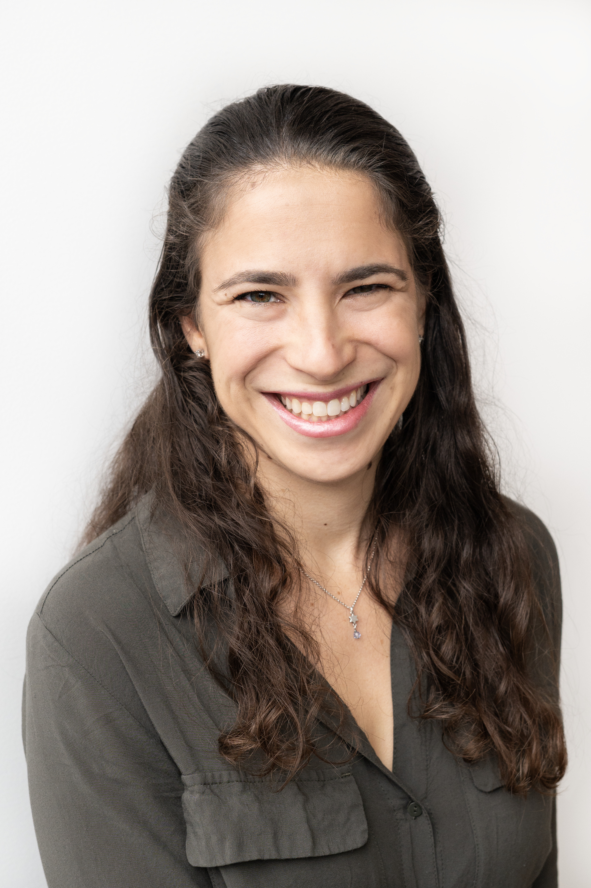

<div class="container-fluid">
  <div class="row">
    <div class="col-xs-12 col-sm-4 col-md-4 col-lg-4">
      <div class="contact-card">
        
        <br><br>
        <span>
          Email: <a href="mailto:jamie@gorsonfamily.com"> jamie@gorsonfamily.com </a>
          <br>
          Resume: <a href="/static/Gorson_Resume_10_2016.pdf">View / Download</a>
        </span>
      </div>
    </div>
    <div class="col-xs-12 col-sm-8 col-md-8 col-lg-8">
      <h5>
        Hi! I am a PhD student at  <a href="http://northwestern.edu">Northwestern University</a> in <a href="http://tsb.northwestern.edu">Technology and Social Behavior</a>, a combined program in Computer Science and Communications. My interest is in designing and building technology to increase hands-on and project-based learning for formal and informal educational spaces. I am currently working in the <a href="http://tidal.northwestern.edu/">TIDAL Lab</a> and in the <a href="http://delta.northwestern.edu/">Delta Lab</a>, under <a href="http://tidal.northwestern.edu/people/mikehorn/"> Michael Horn</a> and <a href="http://matteasterday.com/"> Matt Easterday</a> with students in both Computer Sciences and Learning Sciences. I received my B.S. from <a href="http://olin.edu">Olin College of Engineering</a> in Electrical and Computer Engineering and a concentration in Innovative Education. My research is funded by the<a href="https://www.nsfgrfp.org/"> National Science Foundation Graduate Research Fellowship Program</a> in the field of STEM Ed.
      </h5>
      <br>
        <div> 
    <p style="text-align:center">
      <button onclick="location.href = '/projects.html'" type="button" class="btn-lg btn-default" style="text-align:center">Portfolio of Projects</button>
      <br>
      <button onclick="location.href = '/experience.html'" type="button" class="btn-lg btn-default" style="text-align:center">Professional Experiences</button>
    </p>
  </div>
    </div>
  </div>

</div>
